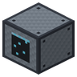
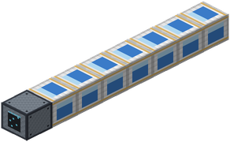
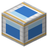

Электролизный стек
- Ключ: Электролизёр
- На схеме 1×1×8
- ṁ ∝ N + 1

Электролизёр и от 1 до 15 электролизных ячеек в линию за его задней гранью. Ячейки включены последовательно, и по закону Фарадея масса разложенного вещества пропорциональна прошедшему заряду: m = Q·M/(z·F). Стек из N ячеек за один цикл перерабатывает N + 1 единиц льда и даёт в N + 1 раз больше гидролокса и кислорода.
Энергия за цикл растёт в ту же пропорцию, поэтому энергия на килограмм постоянна: стек не экономит электричество, он экономит время и место. Без ячеек электролизёр работает как прежде.
Формируется ударом инженерного молота по ключевому блоку. Если структура собрана с ошибкой, молот назовёт первую неверную клетку.
Материалы
| Иконка | Блок | На схеме | Диапазон |
|---|---|---|---|
| Электролизёр (ключевой) | 1 | 1 | |
 | Электролизная ячейка | 7 | 1–15 |
Схема
Слой 1 из 1 (y = 0, вид сверху)
ключевой блокповторяемая секцияниз сетки: лицевая сторона ключевого блока